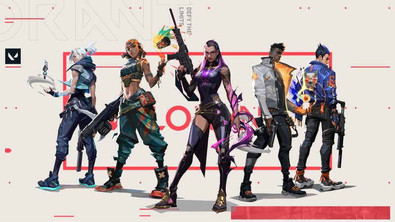

Sobre Valorant
Valorant é um jogo eletrônico multijogador gratuito para jogar de tiro em primeira pessoa desenvolvido e publicado pela Riot Games.
É o primeiro jogo do gênero desenvolvido pela empresa sendo anunciado pela primeira vez com o codinome Project A em outubro de 2019, em um evento de comemoração de 10 anos de League of Legends.Foi lançado em 2 de junho de 2020 para Microsoft Windows.
Sobre os Agentes
Mais do que armas e munição, VALORANT inclui agentes com habilidades adaptativas, rápidas e letais, que criam oportunidades para você exibir sua mecânica de tiro. Cada Agente é único, assim como os momentos de destaque de cada partida.
Ao todo, o game tem 19 personagens disponíveis, chamados “agentes”, cada um com sua história e habilidades únicas.
Mapas do Valorant
Cada mapa serve como um palco para mostrar sua criatividade. Os mapas são feitos sob medida para estratégias de equipe, jogadas espetaculares e momentos eletrizantes. Faça as jogadas que todo mundo vai tentar imitar no futuro.

Alguns personagens podem ser melhores que outros em áreas específicas, e suas habilidades podem ser mais úteis também em posicionamentos-chave.